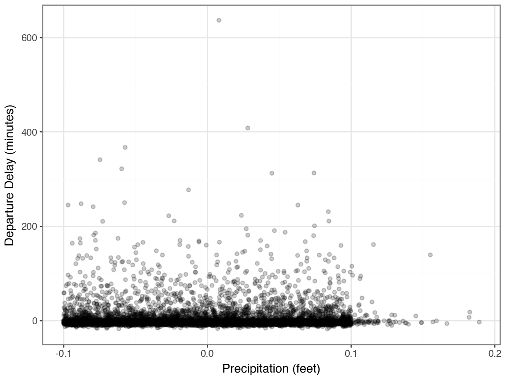

df_songs['Mode'] = (
df_songs['Mode']
.replace({1: 'Major', 0: 'Minor'})
)Combining Datasets
Lab 7 Debrief
Cleaning Variables
What does a Mode of 0 represent?
How did I know that 0 represented a minor key?
The data documentation!
Obtaining Coefficients for Every Variable Level
Even if you converted TimeSignature and Mode into categorical / string variables, you will not get coefficient estimates for every level of these variables.
Q: What do you get?
A: Adjustments for each group relative to the “baseline” group.
Q: What group is the “baseline” group?
A: The group that comes first alphabetically (has the lowest ASCII representation).
Obtaining Coefficients for Every Variable Level
How do you get values for every level of a categorical variable?
Penalized Logistic Regression is the Default!
Model Error versus Testing Error
What is the accuracy of this model?
this model represents the errors of the model that was fit to the training data, where we know the value of the target variable
Cross-validation is not necessary here!
If you were to use this model to predict, what precision would you expect to get?
predicting involves “testing” data, where we don’t know the value of the target variable
Cross-validation is necessary here!
Interpreting Coefficents
Each coefficient is associated with the change in the log-odds of a song containing explicit lyrics.
TimeSignature_1: 1.532310
A 1/4 time signature is associated with an increase of 1.53 in the log-odds of a song containing explicit lyrics.
Speechiness: 5.185788
An increase of speechiness by 1 unit (making the song almost entirely made up of spoken words) is associated with an increase of 5.18 in the log-odds of a song containing explicit lyrics.
Did you standardize?
If so, your interpretation is not a 1 unit increase! Your interpretation is a 1 standard deviation increase above the mean.
The story so far…
Data analysis: The Whole Game
Acquire data and clean it by fixing variable types, dropping or replacing missing data, and looking for other issues.
Explore the dataset by making summaries and plots of one variable.
Establish research questions to answer with this data.
Create visualizations of two or more variables that address simple questions.
Fit predictive models to address more complex questions, and/or to prepare for prediction on future data.
Fit unsupervised models to answer open-ended questions.
Joining Datasets
Example: Planes and Flights
Sometimes, information is spread across multiple data sets.
For example, suppose we want to know which manufacturer’s planes made the most flights in November 2013.
Example: Information on Flights
One data set contains information about flights in Nov. 2013…
year month day ... hour minute time_hour
0 2013 1 1 ... 5 15 2013-01-01T10:00:00Z
1 2013 1 1 ... 5 29 2013-01-01T10:00:00Z
2 2013 1 1 ... 5 40 2013-01-01T10:00:00Z
3 2013 1 1 ... 5 45 2013-01-01T10:00:00Z
4 2013 1 1 ... 6 0 2013-01-01T11:00:00Z
... ... ... ... ... ... ... ...
336771 2013 9 30 ... 14 55 2013-09-30T18:00:00Z
336772 2013 9 30 ... 22 0 2013-10-01T02:00:00Z
336773 2013 9 30 ... 12 10 2013-09-30T16:00:00Z
336774 2013 9 30 ... 11 59 2013-09-30T15:00:00Z
336775 2013 9 30 ... 8 40 2013-09-30T12:00:00Z
[336776 rows x 19 columns]Example: Information on Planes
…while another contains information about planes.
tailnum year type ... seats speed engine
0 N10156 2004.0 Fixed wing multi engine ... 55 NaN Turbo-fan
1 N102UW 1998.0 Fixed wing multi engine ... 182 NaN Turbo-fan
2 N103US 1999.0 Fixed wing multi engine ... 182 NaN Turbo-fan
3 N104UW 1999.0 Fixed wing multi engine ... 182 NaN Turbo-fan
4 N10575 2002.0 Fixed wing multi engine ... 55 NaN Turbo-fan
... ... ... ... ... ... ... ...
3317 N997AT 2002.0 Fixed wing multi engine ... 100 NaN Turbo-fan
3318 N997DL 1992.0 Fixed wing multi engine ... 142 NaN Turbo-fan
3319 N998AT 2002.0 Fixed wing multi engine ... 100 NaN Turbo-fan
3320 N998DL 1992.0 Fixed wing multi engine ... 142 NaN Turbo-jet
3321 N999DN 1992.0 Fixed wing multi engine ... 142 NaN Turbo-jet
[3322 rows x 9 columns]Example: Planes and Flights
Which manufacturer’s planes made the most flights in November 2013?
In order to answer this question we need to join these two data sets together!
Joining on a Key
Keys
A primary key is a column (or a set of columns) that uniquely identifies observations in a data frame.
The primary key is the column(s) you would think of as the index.
A foreign key is a column (or a set of columns) that points to the primary key of another data frame.
Planes are uniquely identified by their tail number (
tailnum).
Joining on a Key
Each value of the primary key should only appear once, but it could appear many times in a foreign key.
Joining on a Key
The Pandas function .merge() can be used to join two DataFrames on a key.
year_x month day dep_time ... engines seats speed engine
0 2013 1 1 517.0 ... 2 149 NaN Turbo-fan
1 2013 1 1 533.0 ... 2 149 NaN Turbo-fan
2 2013 1 1 542.0 ... 2 178 NaN Turbo-fan
3 2013 1 1 544.0 ... 2 200 NaN Turbo-fan
4 2013 1 1 554.0 ... 2 178 NaN Turbo-fan
... ... ... ... ... ... ... ... ... ...
284165 2013 9 30 2240.0 ... 2 20 NaN Turbo-fan
284166 2013 9 30 2241.0 ... 2 20 NaN Turbo-fan
284167 2013 9 30 2307.0 ... 2 200 NaN Turbo-fan
284168 2013 9 30 2349.0 ... 2 200 NaN Turbo-fan
284169 2013 9 30 NaN ... 2 80 NaN Turbo-fan
[284170 rows x 27 columns]Overlapping Column Names
Joining two data frames results in a wider data frame, with more columns.
By default, Pandas adds the suffixes
_xand_yto overlapping column names. , but this can be customized.
Index(['year_x', 'month', 'day', 'dep_time', 'sched_dep_time', 'dep_delay',
'arr_time', 'sched_arr_time', 'arr_delay', 'carrier', 'flight',
'tailnum', 'origin', 'dest', 'air_time', 'distance', 'hour', 'minute',
'time_hour', 'year_y', 'type', 'manufacturer', 'model', 'engines',
'seats', 'speed', 'engine'],
dtype='object')Overlapping Column Names
But this can be customized!
Index(['year_flight', 'month', 'day', 'dep_time', 'sched_dep_time',
'dep_delay', 'arr_time', 'sched_arr_time', 'arr_delay', 'carrier',
'flight', 'tailnum', 'origin', 'dest', 'air_time', 'distance', 'hour',
'minute', 'time_hour', 'year_plane', 'type', 'manufacturer', 'model',
'engines', 'seats', 'speed', 'engine'],
dtype='object')Analyzing the Joined Data
Which manufacturer’s planes made the most flights in November 2013?
manufacturer
BOEING 82912
EMBRAER 66068
AIRBUS 47302
AIRBUS INDUSTRIE 40891
BOMBARDIER INC 28272
MCDONNELL DOUGLAS AIRCRAFT CO 8932
MCDONNELL DOUGLAS 3998
CANADAIR 1594
MCDONNELL DOUGLAS CORPORATION 1259
CESSNA 658
GULFSTREAM AEROSPACE 499
CIRRUS DESIGN CORP 291
ROBINSON HELICOPTER CO 286
BARKER JACK L 252
PIPER 162
CANADAIR LTD 103
BELL 65
FRIEDEMANN JON 63
DEHAVILLAND 63
STEWART MACO 55
LAMBERT RICHARD 54
KILDALL GARY 51
BEECH 47
MARZ BARRY 44
AMERICAN AIRCRAFT INC 42
LEBLANC GLENN T 40
AGUSTA SPA 32
SIKORSKY 27
PAIR MIKE E 25
DOUGLAS 22
LEARJET INC 19
AVIAT AIRCRAFT INC 18
HURLEY JAMES LARRY 17
AVIONS MARCEL DASSAULT 4
JOHN G HESS 3
Name: count, dtype: int64Joining on Multiple Keys
Example: Weather and Flights
What weather factors are related to flight delays?
Here is a data set containing hourly weather data at each airport in 2013:
origin year month day ... precip pressure visib time_hour
0 EWR 2013 1 1 ... 0.0 1012.0 10.0 2013-01-01T06:00:00Z
1 EWR 2013 1 1 ... 0.0 1012.3 10.0 2013-01-01T07:00:00Z
2 EWR 2013 1 1 ... 0.0 1012.5 10.0 2013-01-01T08:00:00Z
3 EWR 2013 1 1 ... 0.0 1012.2 10.0 2013-01-01T09:00:00Z
4 EWR 2013 1 1 ... 0.0 1011.9 10.0 2013-01-01T10:00:00Z
... ... ... ... ... ... ... ... ... ...
26110 LGA 2013 12 30 ... 0.0 1017.1 10.0 2013-12-30T19:00:00Z
26111 LGA 2013 12 30 ... 0.0 1018.8 10.0 2013-12-30T20:00:00Z
26112 LGA 2013 12 30 ... 0.0 1019.5 10.0 2013-12-30T21:00:00Z
26113 LGA 2013 12 30 ... 0.0 1019.9 10.0 2013-12-30T22:00:00Z
26114 LGA 2013 12 30 ... 0.0 1020.9 10.0 2013-12-30T23:00:00Z
[26115 rows x 15 columns]Identifying the Primary Key
What is / are the primary key(s) of this dataset?
origin year month day hour wind_gust precip pressure visib
0 EWR 2013 1 1 1 NaN 0.0 1012.0 10.0
1 EWR 2013 1 1 2 NaN 0.0 1012.3 10.0
2 EWR 2013 1 1 3 NaN 0.0 1012.5 10.0
3 EWR 2013 1 1 4 NaN 0.0 1012.2 10.0
4 EWR 2013 1 1 5 NaN 0.0 1011.9 10.0
... ... ... ... ... ... ... ... ... ...
26110 LGA 2013 12 30 14 21.86482 0.0 1017.1 10.0
26111 LGA 2013 12 30 15 21.86482 0.0 1018.8 10.0
26112 LGA 2013 12 30 16 23.01560 0.0 1019.5 10.0
26113 LGA 2013 12 30 17 NaN 0.0 1019.9 10.0
26114 LGA 2013 12 30 18 NaN 0.0 1020.9 10.0
[26115 rows x 9 columns]Verifying Primary Key
A Key with Multiple Columns
Let’s start by looking at flights out of JFK only, for simplicity.
A Key with Multiple Columns
We need to join to the weather data on year, month, day, and hour.
year month day ... pressure visib time_hour_y
0 2013 1 1 ... 1012.1 10.0 2013-01-01T10:00:00Z
1 2013 1 1 ... 1012.1 10.0 2013-01-01T10:00:00Z
2 2013 1 1 ... 1012.6 10.0 2013-01-01T11:00:00Z
3 2013 1 1 ... 1012.6 10.0 2013-01-01T11:00:00Z
4 2013 1 1 ... 1012.6 10.0 2013-01-01T11:00:00Z
... ... ... ... ... ... ... ...
110728 2013 9 30 ... 1016.5 10.0 2013-10-01T02:00:00Z
110729 2013 9 30 ... 1016.5 10.0 2013-10-01T02:00:00Z
110730 2013 9 30 ... 1016.5 10.0 2013-10-01T02:00:00Z
110731 2013 9 30 ... 1016.3 10.0 2013-10-01T03:00:00Z
110732 2013 9 30 ... 1016.6 10.0 2013-09-30T18:00:00Z
[110733 rows x 30 columns]How does rain affects departure delays?
Hmmmm….where did all the data go?
How does rain affects departure delays?
Joining on Keys with Different Names
Sometimes, the join keys have different names in the two data sets.
This frequently happens if the data sets come from different sources.
For example, if we want to join the (entire) flights data to the weather data, we would need to include the airport in the key.
But the airport is called
originindf_flightsandoriginindf_weather.The
.merge()function providesleft_on =andright_on =arguments for specifying different column names in the left (first) and right (second) data sets.
Joining on Keys with Different Names
Rain and delays by airport
Now we can visualize how rain impacts delays at each airport!
But first, let’s find the mean amount of rain for each departure delay to clean up our plot.
Rain and delays by airport
Joins with Missing Keys
Example: Baby names
The data below contains counts of names for babies born in 1920 and 2020:
1920
Name Sex Count
0 Mary F 70975
1 Dorothy F 36645
2 Helen F 35098
3 Margaret F 27997
4 Ruth F 26100
... ... .. ...
10751 Zearl M 5
10752 Zeferino M 5
10753 Zeke M 5
10754 Zera M 5
10755 Zygmont M 5
[10756 rows x 3 columns]2020
Name Sex Count
0 Olivia F 17641
1 Emma F 15656
2 Ava F 13160
3 Charlotte F 13065
4 Sophia F 13036
... ... .. ...
31448 Zykell M 5
31449 Zylus M 5
31450 Zymari M 5
31451 Zyn M 5
31452 Zyran M 5
[31453 rows x 3 columns]Joins
We can merge these two data sets on a primary key…
Name Sex Count_1920 Count_2020
0 Mary F 70975 2210
1 Dorothy F 36645 562
2 Helen F 35098 721
3 Margaret F 27997 2190
4 Ruth F 26100 1323
... ... .. ... ...
4473 Whitt M 5 23
4474 Wyley M 5 6
4475 Xavier M 5 3876
4476 York M 5 14
4477 Zeke M 5 382
[4478 rows x 4 columns]Missing Keys?
… but what happened to some of the names?
Missing Keys?
Why isn’t Maya in the joined data? It’s in the 2020 data…
Missing keys
How does the merge() function determine which keys get kept?
By default, in order to appear in the joined data, a key must be present in both tables.
This is actually what is called an inner join, but there are other types of joins!
Other Types of Joins
Types of Joins
By default, Pandas does an inner join, which only keeps keys that are present in both tables.
An outer join keeps any key that is present in either table.
A left join keeps all keys in the left table, even if they are not in the right table. But any keys that are only in the right table are dropped.
A right join keeps all keys in the right table, even if they are not in the left table. But any keys that are only in the left table are dropped.
Types of Joins
![A Venn diagram illustrating four types of joins using two overlapping circles in each diagram. The highlighted (green) areas represent the included data for each join type. Inner Join: Only the overlapping region of both circles is highlighted, representing the common data between the two tables. Left Join: The entire left circle, including its overlap with the right circle, is highlighted, representing all data from the left table and any matching data from the right table. Right Join: The entire right circle, including its overlap with the left circle, is highlighted, representing all data from the right table and any matching data from the left table. Outer Join: Both entire circles are highlighted, representing all data from both tables, including matches and non-matches.](images/14-joins.png)
Types of Joins
We can customize the type of join using the how = parameter of .merge(). By default, how = "inner".
Types of Joins
Note the missing values for other columns, like
Count_1920!What other type of join would have produced this output in the Maya row?
Types of Joins
Note the missing values for other columns, like
Count_1920!What other type of join would have produced this output in the Maya row?
Quick Quiz
Which type of join would be best suited for each case?
- We want to determine the names that have increased in popularity the most between 1920 and 2020.
- We want to graph the popularity of names over time.
- We want to determine the names that have decreased in popularity the most between 1920 and 2020.
Filtering Joins
Filtering Joins
Inner, outer, left, and right are known as mutating joins, because they create new combined data sets.
There are two other types of joins that we use for filtering to get rid of some rows:
A semi-join tells us which keys in the left are present in the right.
An anti-join tells us which keys in the left are not present in the right.
Filtering Joins
![A diagram illustrating the concept of a semi-join. On the left, two tables are shown: The first table (x) has two columns, with labeled values (x1, x2, x3) in the first column and numerical values (1, 2, 3) in the second column. The second table (y) has two columns, where the second column contains numerical values (4, 2, 1), and the first column has values (y3, y2, y1). Lines connect matching values between the two tables: 1 from x is found in y, as is 2, but 3 is not present in y. The result of the semi-join is shown in a table on the right, containing only the rows from x where a match was found in y. The output table has two columns: key and val_x, and it retains only the rows with keys 1 and 2 from x (x1 and x2), omitting x3 since 3 is not present in y.](images/14-semi-join.png)
![A diagram illustrating the concept of an anti-join (anti_join(x, y)). On the left, two tables are shown: The first table (x) has two columns, with labeled values (x1, x2, x3) in the first column and numerical values (1, 2, 3) in the second column. The second table (y) has two columns, where the second column contains numerical values (4, 2, 1), and the first column has values (y3, y2, y1). Lines connect matching values between the two tables: 1 from x is found in y, as is 2, but 3 is not present in y. Red lines indicate rows that have matches, which are excluded in the anti-join. The result of the anti-join is shown in a table on the right, containing only the row from x where no match was found in y. The output table has two columns: key and val_x, and it retains only the row with key 3 from x (x3), omitting x1 and x2 since they had matches in y.](images/14-anti-join.png)
Filtering Joins
Which names existed in 1920 but don’t in 2020?
In Pandas, we can’t do these using .merge(), but we can use the isin() function!
Takeaways
Takeaways
A primary key is one or more columns that uniquely identify the rows.
We can join (a.k.a. merge) data sets if they share a primary key, or if one has a foreign key.
The default of
.merge()is an inner join: only keys in both data sets are kept.We can instead specify a left join, right join, or outer join; think about which rows we want to keep.
Filtering joins like anti-join and semi-join can help you answer questions about the data.
Use
.isin()to see which keys in one dataset exist in the other.